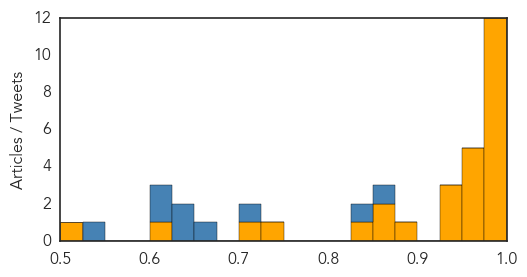
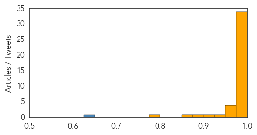

Ebola
30-Day Web Trend
0 alerts, 0 warnings

30-Day Twitter Trend
0 alerts, 0 warnings

Article Locations

Article Confidences
Top Articles:
- 1.000
- Decline in Ebola cases stalls in West Africa
- 0.999
- Ebola could hit again and we would hardly do better -MSFHealthcare
- 0.999
- NGO warns world leaders W.Africa not ready for new Ebola outbreak
- 0.999
- Sierra Leone Enforces Curfew as Ebola Virus Resurfaces in North West Regions
- 0.998
- Ebola could hit again and we would hardly do better
- 0.997
- Ebola ‘could hit again in West Africa’
- 0.997
- National Geographic Magazine
- 0.996
- Ebola could hit again - MSF - Africa
- 0.995
- Hawaii Tribune-Herald
- 0.995
- Sierra Leone leader imposes curfew in bid to halt Ebola
- 0.990
- Ebola nurse Will Pooley gets MBE
- 0.977
- PH ready to contain Mers—Palace
- 0.969
- PM urges Thais to be health conscious amidst MERS outbreak
- 0.968
- Ebola is on the rise again — and the world is no better prepared for it than last year
- 0.965
- North Korea vows 'watertight' measures against Mers, East Asia News & Top Stories
- 0.963
- N Korea vows 'watertight' measures against MERS
- 0.956
- Opening remarks by SFH at media session after meeting Professor Malik Peiris and Professor David Hui
- 0.945
- Please don't put me under quarantine
- 0.938
- North Korea vows ‘watertight’ measures against MERS
- 0.937
- N Korea vows 'watertight' measures against MERS
- 0.892
- Ebola fears: Milford Father Files Suit After Daughter Told To Stay Home From School Over Ebola Concerns
- 0.873
- Sepsis: What You Need To Know
- 0.868
- Ebola Medal created to recognise the people helped to stop the spread of Ebola
- 0.827
- 10 things you need to know today
- 0.726
- The world still isn't equipped to handle Ebola, Doctors Without Borders says
- 0.708
- Symantec Security Response: MERS outbreak used as bait to spread Trojan.Swort
- 0.614
- Liberian President Praises Cuba for Ebola Crisis Help
- 0.502
- World briefs: Egypt sends 23 to prison in Shiite killings
Top Tweets:
- 0.859
- Thank you Africa Liberia is on Zero Ebola cases let's get Guinea and Sierra Leone to Zero help MakeHealthHappen AUSummit 25thAUSummit
- 0.839
- RT: The lesson from the Ebola Virus Disease is that with African solidarity & resolve we can find our own solutions to our c…
- 0.721
- The world still isn't equipped to handle Ebola Doctors Without Borders says - The Week Magazine http://t.co/mnKpusazXD ebola EVD
- 0.655
- Flu MERS Ebola...When sensible thorough & rapid epidemiological analysis is required you can expect to see MVK! https://t.co/sRrC4r4Unt
- 0.644
- RT: Ebola exposed the weaknesses of our health systems. Henceforth we must train more health workers & build & strengthen ou…
- 0.642
- Ebola fight not over yet: MSF - Reuters http://t.co/4E7IRJYOwx ebola EVD
- 0.614
- Learn more here how Ebola cases have risen in Guinea and Sierra Leone https://t.co/uzOoMmkuPw makehealthhappen 25thausummit AUSummit
- 0.601
- Liberian President Praises Cuba for Ebola Crisis Help - teleSUR English http://t.co/E6qnHoR9oh ebola EVD
- 0.528
- MSF: Ebola fight not over yet - Washington Post http://t.co/2oncEXCtix ebola EVD
MERS
30-Day Web Trend
24 alerts, 2 warnings

30-Day Twitter Trend
6 alerts, 0 warnings

Article Locations

Article Confidences
Top Articles:
- 1.000
- MERS Forces Limited Operations at Seoul Hospital
- 1.000
- Nigeria on alert over Middle East respiratory syndrome
- 1.000
- 14th person dies of MERS in S. Korea; 2 hospitals closed – The Korea Times
- 1.000
- S. Korea to See More MERS Cases
- 1.000
- Experts expect more MERS cases, downplay chance of pandemic
- 1.000
- Filipino female nurse PH’s 1st MERS case; DOH tracking contacts
- 0.999
- Health officials: MERS virus not spreading outside South Korean hospitals
- 0.999
- MERS may have reached Europe as death toll hits 15 since South Korea diagnosis
- 0.999
- South Korea hospital 'is source of many Mers cases'
- 0.999
- Experts downplay MERS crisis; S. Korea records 14th death
- 0.999
- MERS: Seoul hospital at centre of South Korean outbreak suspends services; death toll now at 15
- 0.999
- MERS virus claims 15 lives in South Korea
- 0.999
- MERS panic ‘unnecesary’
- 0.999
- Korean ‘MERS epicenter’ suspends service
- 0.999
- The World Health Organization Concerned About Propagation of the Coronavirus in Korea
- 0.998
- WHO calls emergency meeting on "large, complex" S. Korea MERS outbreak
- 0.998
- Kingdom South Korea see no MERS letup
- 0.998
- [Editorial] Info sharing crucial
- 0.998
- New MERS death reported in South Korea
- 0.998
- New #MERS death reported in South Korea
- 0.998
- (7th LD) WHO says MERS in S. Korea 'large and complex'
- 0.998
- Hospital at center of South Korea's MERS outbreak suspends services; 7 new cases
- 0.997
- 6th person dies of MERS virus in South Korea - Northwest Asian Weekly
- 0.997
- South Korea Reports Seven New Cases of MERS, Brings Total to 145
- 0.996
- 'MERS-CoV' Infection
- 0.996
- WHO: MERS-Cov has not mutated, but Korea outbreak seen to worsen
- 0.996
- 15th person dies from MERS in S. Korea, 7 new cases reported- Nikkei Asian Review
- 0.995
- Another Pinoy with MERS in Riyadh
- 0.995
- South Korea Confirms Seven More MERS Cases as Economy Suffers
- 0.993
- ‘Woman who escaped from Miri Hospital not MERS-CoV suspect’ – BorneoPost Online
- 0.988
- The Manila Times Online
- 0.981
- KUAM.com-KUAM News: On Air. Online. On Demand.
- 0.977
- Embassy in Riyadh says Pinoy has MERS virus
- 0.976
- Hospitals in PH unprepared for possible outbreak
- 0.972
- More tests needed to rule out MERS for S.Korean man in Slovakia
- 0.967
- S. Korea reports 11th death from MERS outbreak[2]- Chinadaily.com.cn
- 0.964
- Tests show South Korean in Slovakia probably does not have MERS
- 0.959
- Tests show South Korean in Slovakia probably does not have MERS
- 0.934
- Joint team faults gov’t information handling-INSIDE Korea JoongAng Daily
- 0.923
- China's Aviation Regulator Orders Enhanced MERS Control
- 0.890
- Hospitals told to be on alert vs MERS-CoV
- 0.859
- Slovakian hospital tests South Korean man in suspected Mers case
- 0.791
- Officials and traders in Suvarnabhumi Airport meet to ensure synchronized action against MERS
Top Tweets:
- 0.643
- WHO Director-General is convening the 9th Meeting of the Emergency Committee on MERS-CoV under International Health Regulations on 16 June